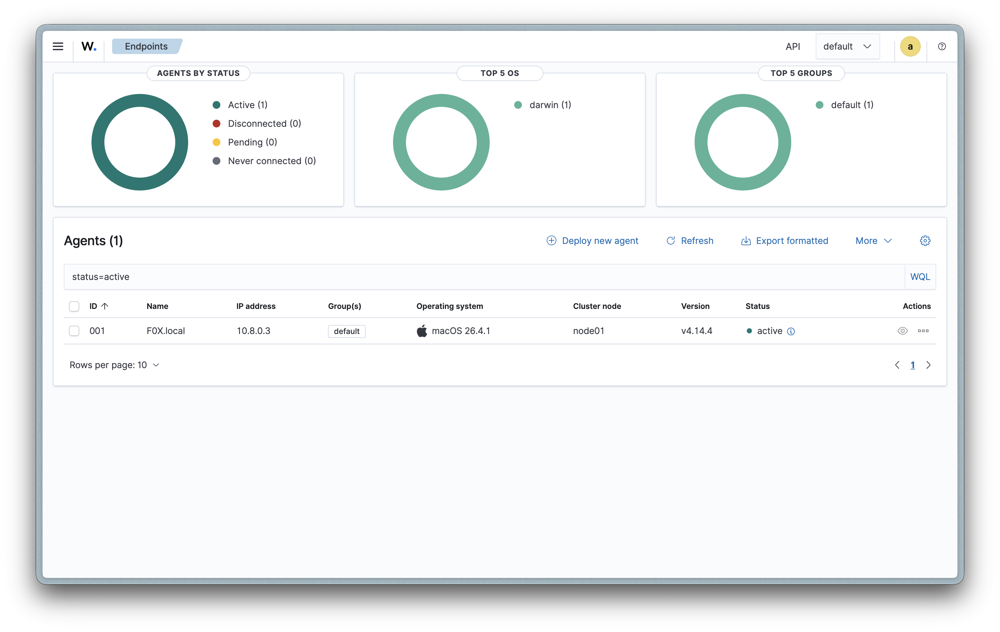
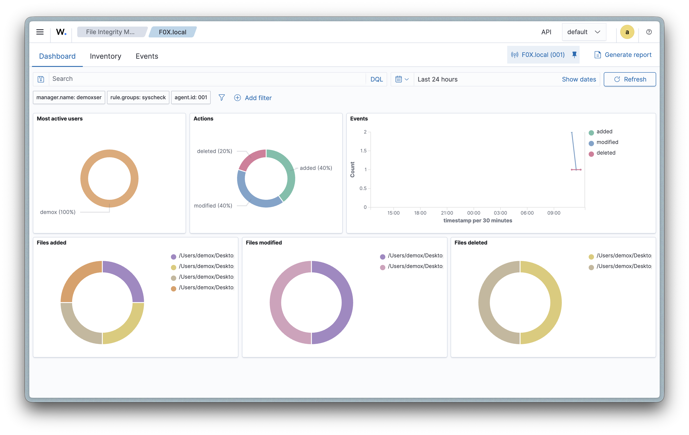
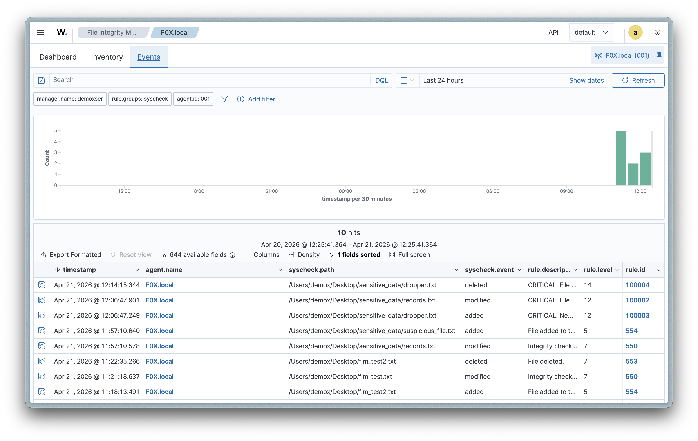
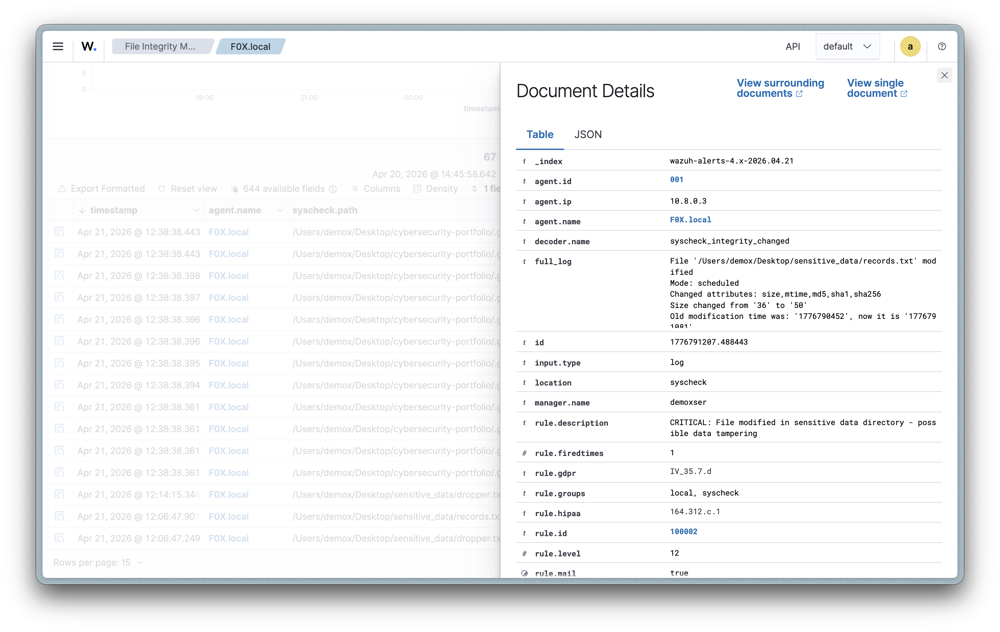

IT professional with 5+ years of infrastructure experience transitioning into cybersecurity. I build real-world security labs to develop and demonstrate SOC analyst capabilities — from SIEM deployment to alert triage to custom detection engineering.
Threat detection, log analysis, and custom detection rules on self-hosted infrastructure
Deployed a full Wazuh SIEM stack (indexer, server, and dashboard) on a 2011 Mac mini running Ubuntu Server 24.04. Configured endpoint monitoring with a macOS agent, implemented file integrity monitoring on sensitive directories, and wrote custom detection rules that escalate alert severity based on directory criticality — mapping alerts to HIPAA, GDPR, and PCI-DSS compliance frameworks.




Network segmentation, firewall rules, and traffic analysis
Virtualized network environment with pfSense firewall for practicing rule creation, DHCP configuration, traffic filtering, and network segmentation. Will include attack simulation with HPING from Kali Linux and malicious traffic blocking.
Web application firewall with SSL/TLS certificate management
Deploy a web application firewall to protect web services, configure self-signed certificates with OpenSSL, and test against common web attacks including SQL injection and cross-site scripting.
Automated threat detection and SOC playbook execution
Build an AI-powered SOC automation agent using GPT that detects malicious IPs via Python scripting and executes response actions based on a SOC analyst playbook. Demonstrates automation thinking and efficiency in security operations.
Open to SOC analyst and security operations roles in the Chicago area.